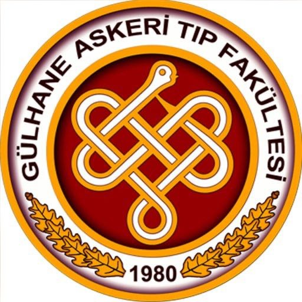
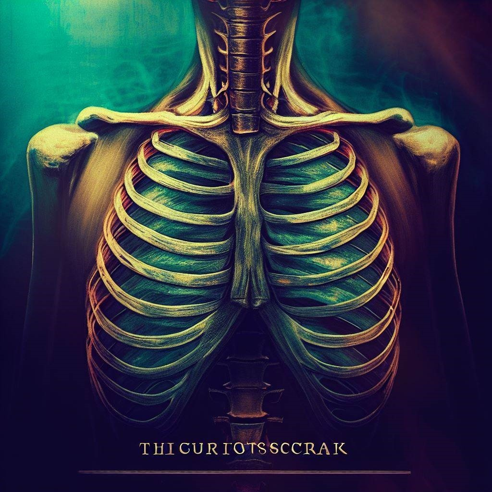
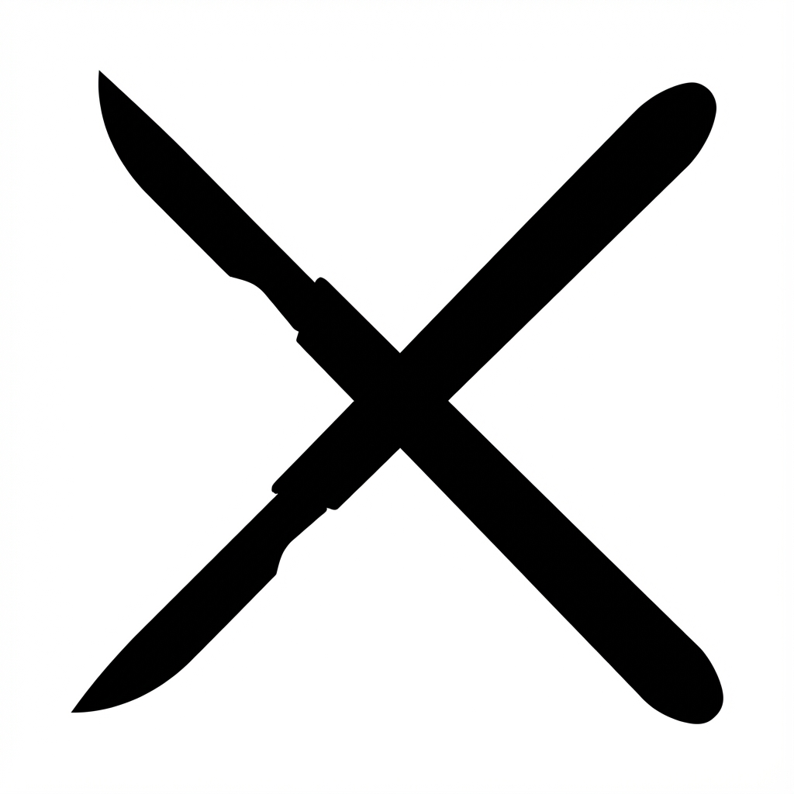

Ankara Gülhane Askeri Tıp Fakültesi'nden mezun oldum. Uzmanlık eğitimimi İstanbul Gülhane Askeri Tıp Akademisi Haydarpaşa Göğüs Cerrahisi Anabilim Dalı'nda tamamladım.
Akciğer kanserinin tanısı, cerrahi tedavisi ve idamesi.
VATS (Video Yardımlı Torakoskopik Cerrahi) ve RATS (Robot Yardımlı Torakoskopik Cerrahi) ile daha az ağrılı ve hızlı iyileşme sağlayan operasyonlar.
Göğüs kafesi şekil bozuklukları (pektus ekskavatum ve karinatum) ve göğüs duvarı tümörlerinin ameliyatla düzeltilmesi.
Mediasten bölgesindeki kist ve tümörlerin tanı ve tedavisi.
Randevu ve bilgi almak için aşağıdaki kanallardan ulaşabilirsiniz.
Telefon: 0212 909 60 00 (Dahili: 21866 - 21867)
E-posta: omer@omeryavuz.net | omeryavuz@dr.com